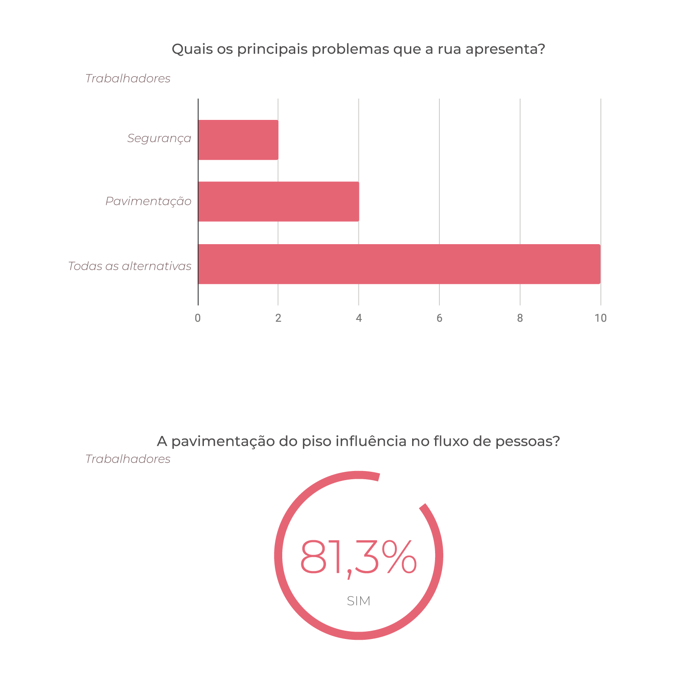
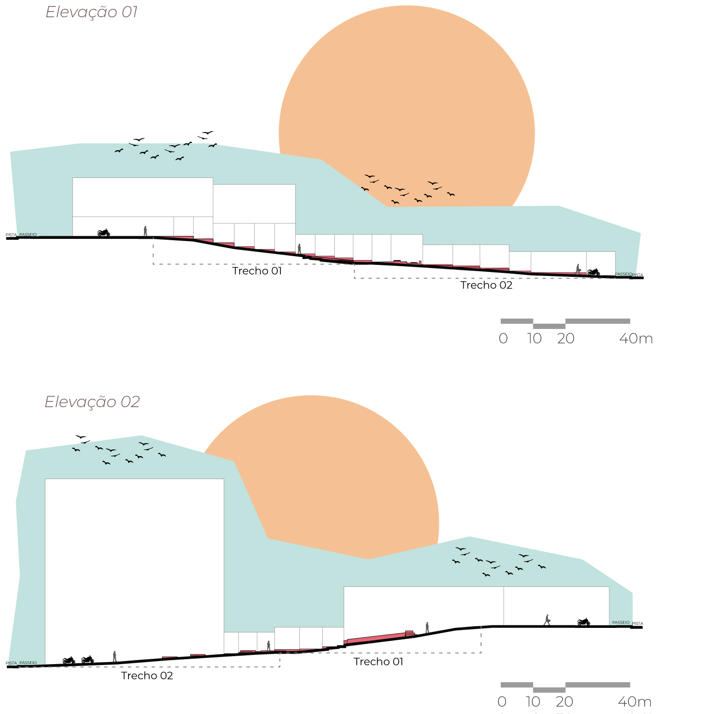

©2017 LabRua
Template: Bootstrapious
+ Kishan B

Diagnóstico Urbano: Beco do telégrafo.
Localizado no miolo do centro histórico e comercial da cidade de Campina Grande, o “Beco do Telégrafo”(também conhecido como “Beco das Noivas”, “Beco da Catedral”, entre outros) é um lugar bastante característico para os campinenses e marcado pela resistência ao tempo.
Em parceria com a Secretaria de Desenvolvimento Econômico de Campina Grande - PB, foi desenvolvido pelo Laboratório de Rua, em maio e abril de 2019, um diagnóstico urbano do Beco do Telégrafo. A leitura do lugar, com análises das dinâmica do espaço, tinha como objetivo orientar as possíveis intervenções de melhorias do espaço para os usuários, além de atrair pessoas para fomentar o turismo local.

A fim de incentivar a vitalidade urbana no Beco do Telégrafo, fez-se necessário a elaboração de um diagnóstico que entendesse as dinâmicas que acontecem no beco, de forma a garantir a preservação das pré-existências e ampliação das potencialidades que aquele espaço público oferece.
A produção do diagnóstico seguiu metodologias já utilizadas pelo LabRua, buscando analisar a infraestrutura física, os usos nas edificações, além das permanências e passagens das pessoas. Desta forma, foram executadas contagens de pedestres e motos, entrevistas com trabalhadores e passantes no beco, análise comportamental, levantamento topográfico e morfológico.


Análises produzidas nesta pesquisa
- Contagem de pessoas
- Entrevistas com trabalhadores e passantes
- Elevações do lugar
- Mapa de situação das Calçadas
- Análise de fluxo intenso em loja
- Mapa de Uso e Ocupação do Solo
- Análise de fluxo de pessoas
- Análise de estacionamentos na área
- Mapa de Ponto Crítico
Alguns resultados
Caderno Beco do Telégrafo